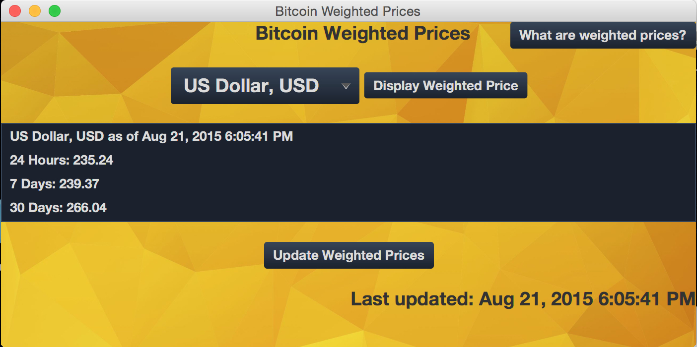

About Me
I am an aspiring software developer graduating from University of Maryland with a degree in Computer Science in December 2016.
- Interests
-
 Baltimore Orioles
Baltimore Orioles -
 Maryland Basketball
Maryland Basketball - Gaming
Work
-
 Tenable Network Security
Tenable Network Security
Front End Developer Intern (June - August 2016)- Implemented production code for Security Center, Tenable's enterprise vulnerability management product.
- Merged over 40 pull requests into codebase handling bug fixes for front-end features such as validation, user permissions, UI issues.
- Implemented unit tests for Security Center.
- Worked with a team in an Agile development environment.
Projects
-
- Application that allows the user to compare the weighted prices of Bitcoin over three recent time periods, 24 hours, 7 days, and 30 days, in a 24 different currencies.
- Tools: Java, JavaFX, CSS

-
- A to do list application that features several sort functions, a note function, task removal, and persistent data through object serialization.
- Tools: Java, JavaFX, CSS
-
- Displays The University of Maryland's diner lunch and dinner menu for the current day. Includes an anonymous comment section for cross user interaction and menu reviews.
- Tools: Java, JavaFX, HTML, CSS, AWS
-
Software-Defined Switching School
- Uses OpenDaylight to control a simulated network of OpenFlow-enabled switches created using Mininet.
- Implemented a program to determine the path of active traffic in the simulated network where a single pair of hosts will be exchanging traffic.
- Uses the REST APIs of OpenDaylight to retrieve topology and inventory data of the network to interpret and detect any network traffic.
- Outputs an ordered list of the detected traffic's complete path through the network, including all involved hosts, ports, and switches, to a YAML file.
- Tools: Python, Mininet, OpenDaylight